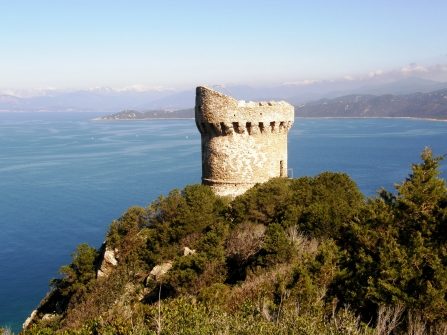
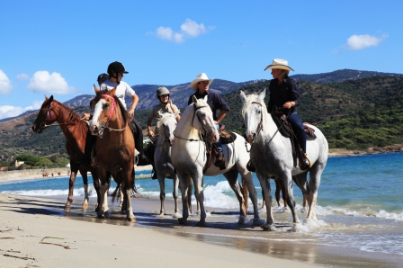
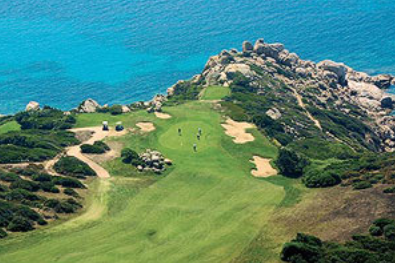
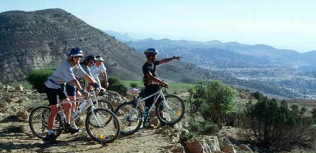
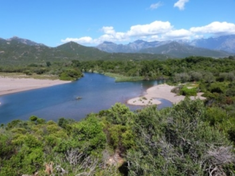
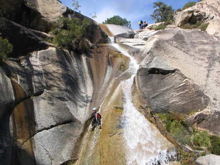

Capu di Muru: En laissant son véhicule à la fin de la route venant de Acqua Doria, il faudra marcher une heure et demi pour atteindre la tour de Capu di Muru. Votre effort sera récompensé par la vue imprenable sur le golfe d’Ajaccio et une baignade dans ses eaux turquoises.

Partez à cheval à la découverte du littoral de la Cors, réputé pour la beauté de ses plages, de ses paysages sauvages où le maquis exhale de délicieuses senteurs et la richesse de son patrimoine. Vous découvrirez grâce à votre monture une côte vierge de toute empreinte humaine, dont vous apprécierez les somptueuses plages, les criques ou les baies sauvages, d'une beauté inoubliable. Vous serez reçus par des hommes qui façonnent cette terre, bergers, apiculteurs, viticulteurs qui vous feront partager leurs traditions, leur savoir faire, la qualité de leur accueil et l'amour qui les lie à leur terre.

Le Golf, c'est d'abord jouer avec un cadre magnifique, au coeur des montagnes corses, ou aux côtés d’une mer turquoise. C'est un parcours bordé d'oliviers, de palmiers, de rochers, où les odeurs du maquis vous accompagnent. Les Golfs corse s'imposent en effet aux joueurs qui le découvrent comme un parcours exceptionnel car ils s'inscrivent dans un site incomparable.

En VTT, il y en a pour tous les amateurs. Les randonnées dans le Niolu et ses pistes montagneuses sont indiquées pour les plus téméraires. Les autres pourront suivre des itinéraires de bord de mer ou effectuer la traversée des villages. Si tel était le cas, prenez le temps de faire une pause, et de bavarder avec les habitants. Ils sauront vous conseiller des tracés peu connus et encore sauvages. Les longues boucles ne manqueront pas également de vous séduire. Faites un petit détour par le plateau du Cuscione, son circuit est le terrain de jeu des sportifs de haut niveau.

Le canoë kayak est conseillé pour les amoureux de calme et les familles avec enfants. Nous proposons la balade sur le delta du Fangu. Dans cette zone protégée située au pied de la tour génoise de Galéria, à l'embouchure du Fangu, quatre bras d'eau parcourent la plaine. Vous pouvez découvrir en canoë-kayak la faune et la flore d'un site exceptionnel classé Réserve de Biosphère (MAB) par l'Unesco.

Le canyoning est une activité très développée en corse. Même si la Corse est réputée pour ses plages de sable blanc et ses eaux turquoise, elle l’est aussi pour ses sites incomparables pour la baignade canyoning. Dans la Richiusa c’est le canyoning – sport loisir d’apparence abordable, mais exigeant en termes de technique et d’équipements - qui est à l’honneur.
